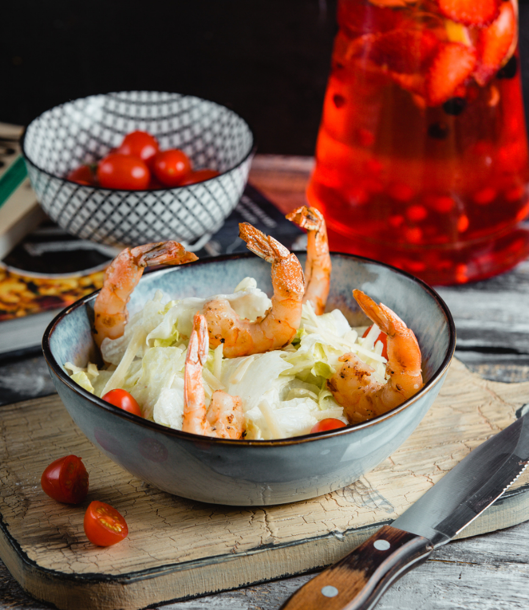

Recipe Page
Spring Roll Bowl

Description
The spring roll bowl is a no roll version of fresh vietnamese spring rolls or fried egg rolls, served in a bowl.
This delicious spring roll bowl is full of crisp and crunchy vegetables, shrimp, and vermicelli noodles, topped with peanut sauce and served with Vietnamese Nuoc Cham sauce for the perfect lightweight lunch to power you through until dinner.
Ingredients
- 4 oz vermicelli noodles
- 1 pound large shrimp - peeled, deveined, and cooked
- 1 head butternut lettuce, torn into bite-sized pieces
- 2 large carrots, peeled and julienned
- 1 English cucumber, julienned
- 1 avocado, sliced
- 2 green onions, sliced on a bias
- 1/2 cups small mint leaves (or torn leaves)
- 1/4 cups of salted peanuts
Peanut Sauce
- 1/4 cup creamy peanut butter
- 1/4 cup canned unsweetened coconut milk
- 2 tablespoons hoisin sauce
- 1 tablespoon lime juice
- 1 tablespoon chopped roasted peanuts
- 1 teaspoon sambal oelek (optional)
Steps
- Gather all ingredients.
- Cook vermicelli noodles according to package directions. Run under cold water to cool, Divide noodles among four bowls.
- Add one fourth of the cooked shrimp to each bowl. On the side of the noodles arrange one cup of lettuce, 1/4 cup carrots, 1/4 cup cucumber, and 1/4 an avocado each bowl.
- Meanwhile for Nam Chom combine rice vinegar, fish sauce, lime juice, ginger, and birds eye chilli (optional) in a small bowl.
- For the peanut sauce combine peanut butter, coconut milk, hoisin sauce, lime juice, peanuts and sambal oelek in a small bowl; whisk until smooth.
- Top bowls with green onions, mint leaves and peanuts, Serve with peanut sauce and/or Nam Choc.